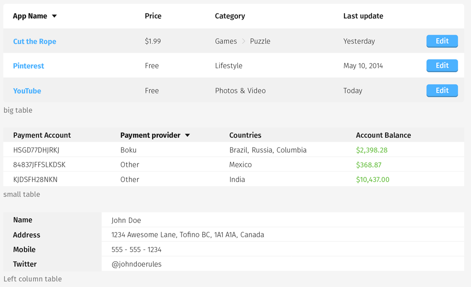

<div class="container">
	<div class="row">
		<div class="col-sm-12 col-md-12 col-lg-12">
			<h1>Tables</h1>
			<br/>
			<br>
			<p class="longText">Three styles of table, meant for use on the devHub. Big, Small, and L-hand column (these are new and subject to change).
			</p>
		</div>
	</div>
	<!-- Pagination. If you have more than one page, set the multipage variable in the Frontmatter to true. Editing the pagination code happens in /_includes/homePagination.html.
		NOTE: This is currently broken in the Jekyll ver of this template.
		-->
		{% if page.multipage %}
			{% include homePagination.html %}
		{% endif %}
